Escuta de verdade
A consulta começa por você. Histórico, desejos e o que te preocupa entram no plano.
Cirurgiã-dentista
Atendimento odontológico com foco na prevenção, saúde e bem-estar. Cada paciente é atendido de forma individualizada, com cuidado, atenção e responsabilidade.
Acredito em uma odontologia humanizada e acolhedora.
O cuidado
A consulta começa por você. Histórico, desejos e o que te preocupa entram no plano.
Um sorriso bonito nasce de uma boca saudável. Cada etapa respeita o seu tempo.
Intervenções equilibradas, sem exagero, para um resultado que converse com o seu rosto.
Exame clínico, análise do histórico bucal e um plano explicado com clareza antes de qualquer etapa.
Marcar consultaLimpeza, remoção de biofilme e tártaro, e manutenção da saúde gengival.
Marcar consultaAtendimento para dor, trauma e situações que precisam de cuidado o quanto antes.
Marcar consultaResinas para recuperar forma e função, acompanhando a cor natural do dente.
Marcar consultaClareamento com manejo de sensibilidade, no ritmo indicado para o seu caso.
Marcar consultaFacetas em resina para harmonizar forma e cor, com resultado natural.
Marcar consultaToxina botulínica terapêutica e preventiva, com realce sutil da face.
Marcar consultaExtrações quando indicadas, com explicação clara do procedimento e dos cuidados depois.
Marcar consultaClareamento dental
Deslize sobre o sorriso e veja como uma mudança de tonalidade transforma a percepção do sorriso.
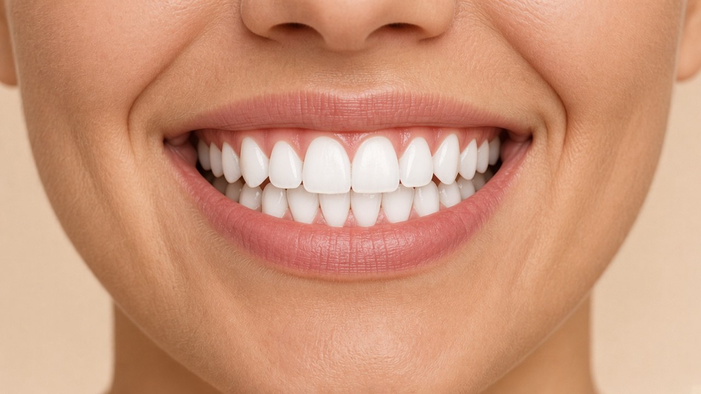
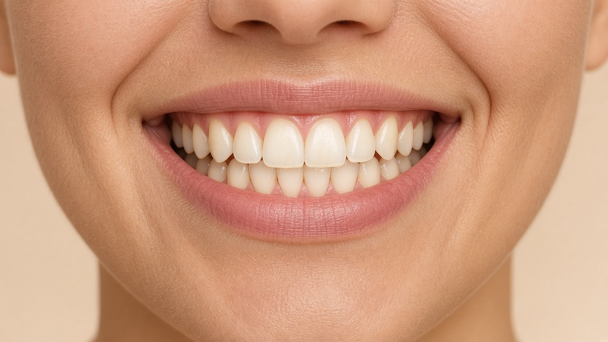
Arraste para comparar
Seu sorriso também pode passar por essa transformação.
Agendar avaliaçãoCasos reais
Resultados de pacientes atendidos pela Dra. Thaís. Cada sorriso é único.
Clareamento dental
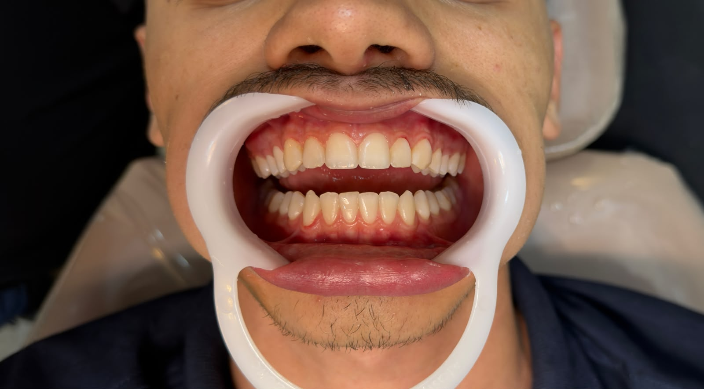
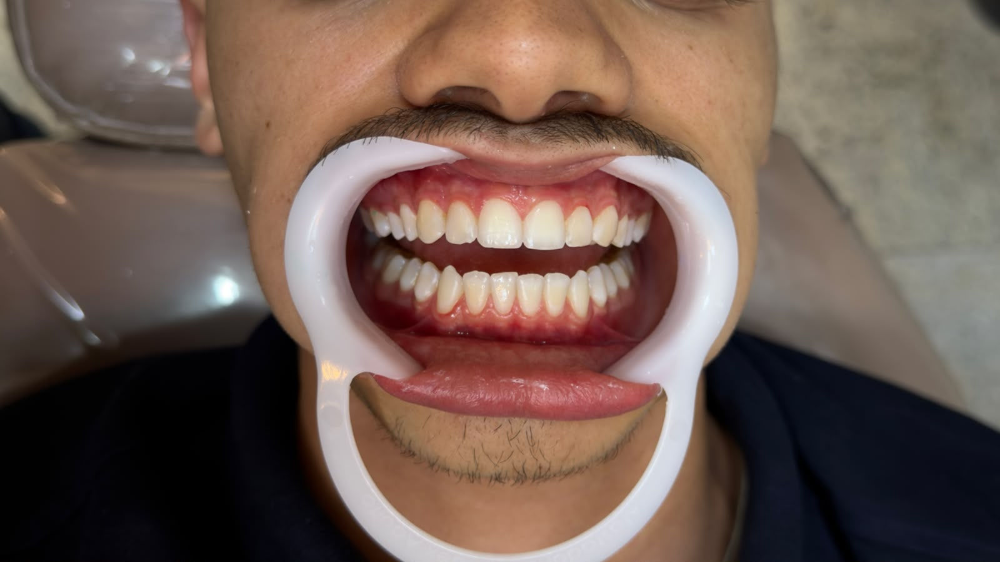
Restaurações
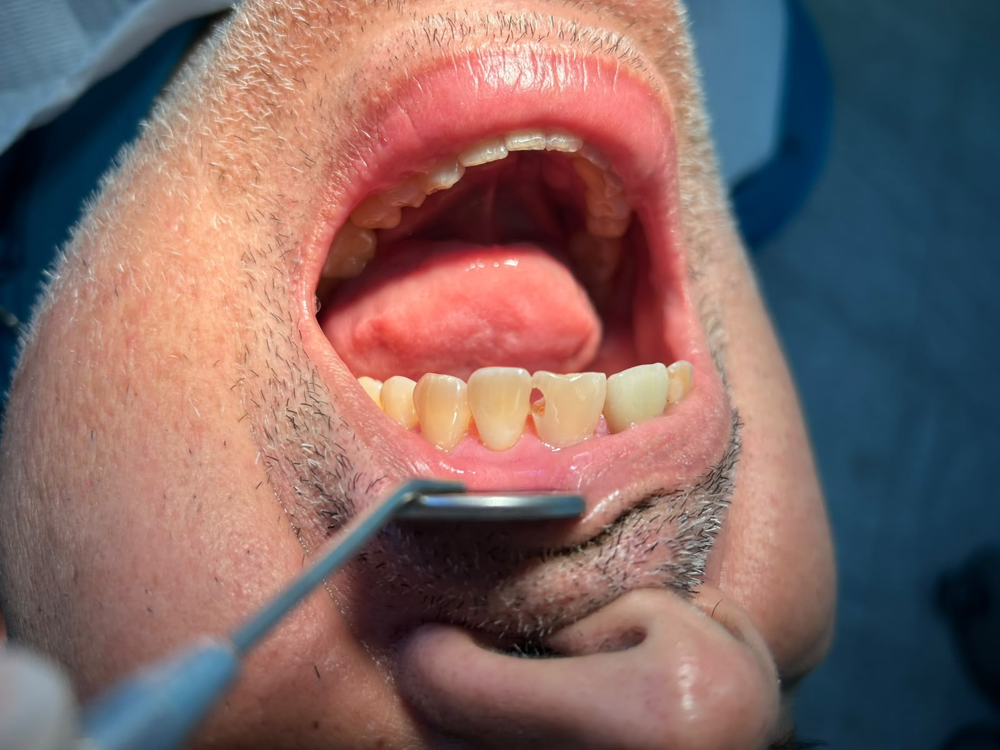
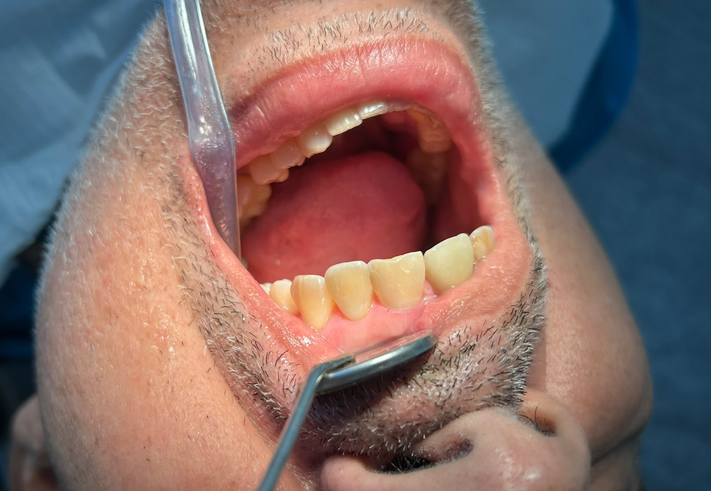
Limpeza e Profilaxia
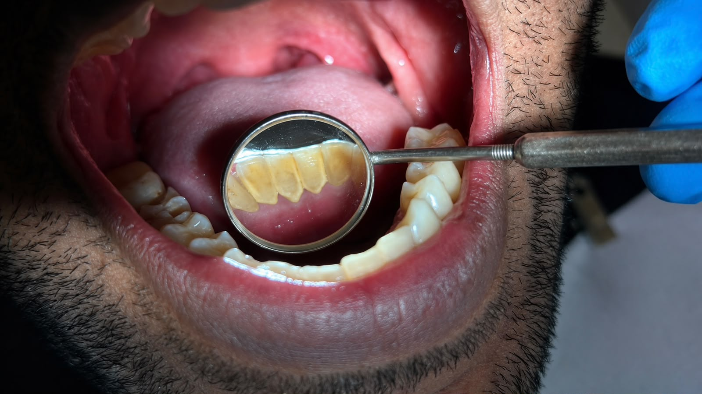
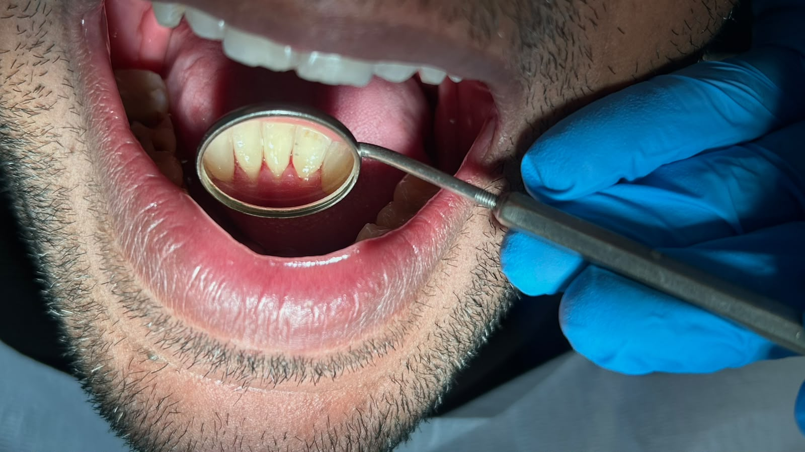
Clareamento dental
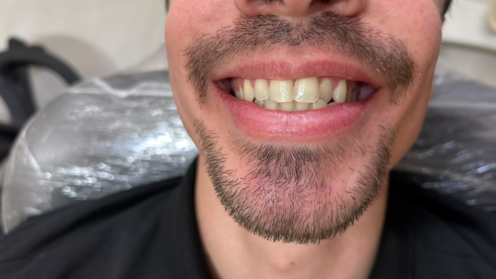
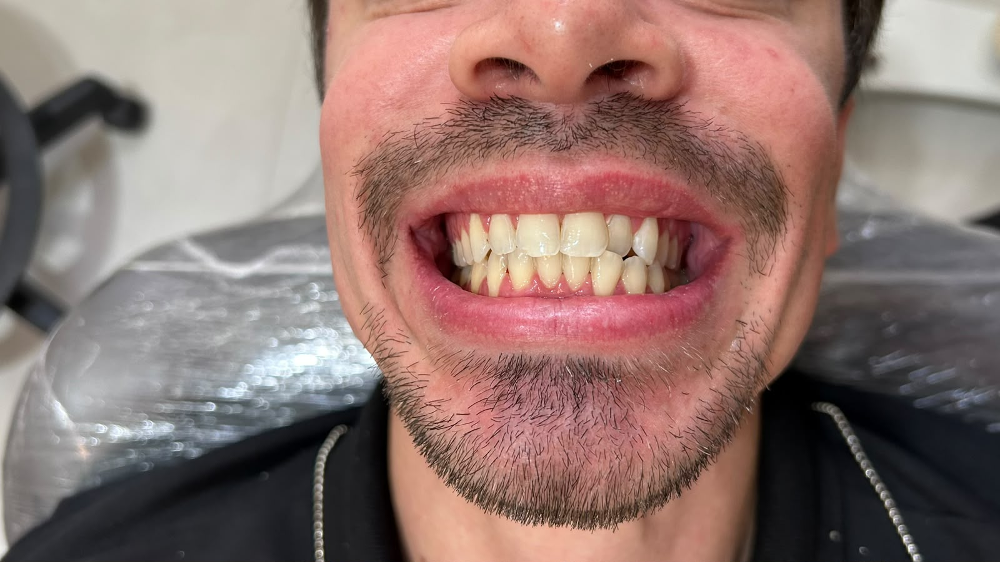
Botox
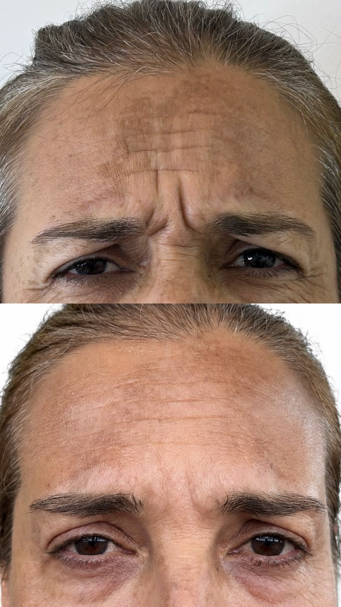
Botox
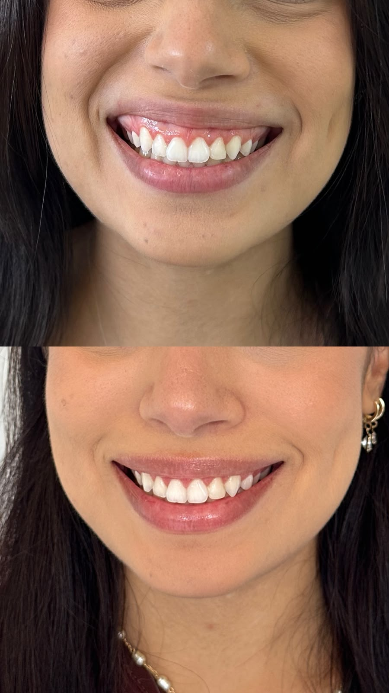
Botox
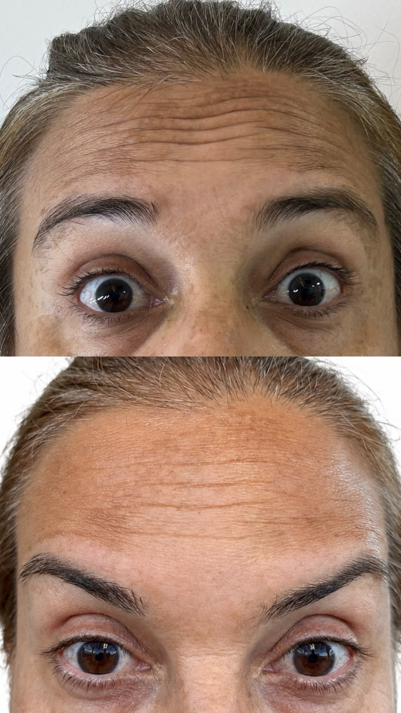
Como funciona
Um passo de cada vez, com explicação clara antes de seguir.
Você conta o que busca e o que te incomoda. A escuta faz parte do atendimento.
Exame clínico e uma explicação simples do que foi observado.
Etapas e cuidados conversados com clareza, no ritmo que faz sentido para você.
Orientação depois do atendimento para você seguir com segurança.
Sobre a Dra.
Cirurgiã-dentista
Formada pela Universidade de Pernambuco, a Dra. Thaís dedica o consultório a um atendimento odontológico com foco na prevenção, na saúde e no bem-estar.
Cada paciente é recebido de forma individualizada. A consulta começa pela escuta: o histórico, o que incomoda e o que você busca. A partir daí, o plano é explicado com clareza, no ritmo que faz sentido para o seu caso.
Procedimentos como clareamento, restaurações e harmonização são planejados de acordo com as necessidades, as indicações clínicas e os objetivos de cada paciente, sempre respeitando a individualidade de cada sorriso.
Dúvidas
A primeira consulta é para conhecer você. A Dra. Thaís ouve seu histórico, faz o exame clínico e explica o que faz sentido para o seu caso, com um plano transparente.
Sim. O atendimento é com hora marcada, para você ser recebido com calma.
Isso varia de pessoa para pessoa. Na avaliação, a Dra. Thaís vê se o clareamento é indicado e conversa sobre os cuidados para o seu conforto.
A intenção é acompanhar a cor e a forma do seu dente. O que é possível no seu caso é explicado na consulta, antes de começar.
O uso é terapêutico e preventivo, com realce sutil. A Dra. Thaís avalia a musculatura e conversa sobre o resultado esperado antes de qualquer aplicação.
Pelo WhatsApp. Clique em qualquer botão de agendamento desta página para conversar com a Dra. Thaís e escolher o melhor dia e horário.
Consultório
Dra. Thaís de Araújo · Odontologia
Av. Visconde de Jequitinhonha, 209
Sala 205
Recife – PE · CRO-PE 22370
Atendimento odontológico com hora marcada, em um ambiente preparado para cuidar da sua saúde bucal.
Agendamento via WhatsApp